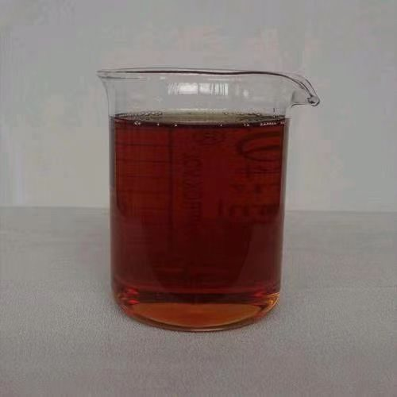
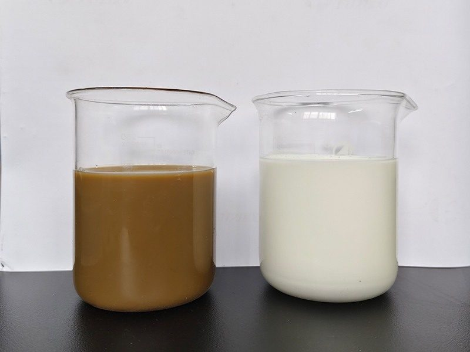
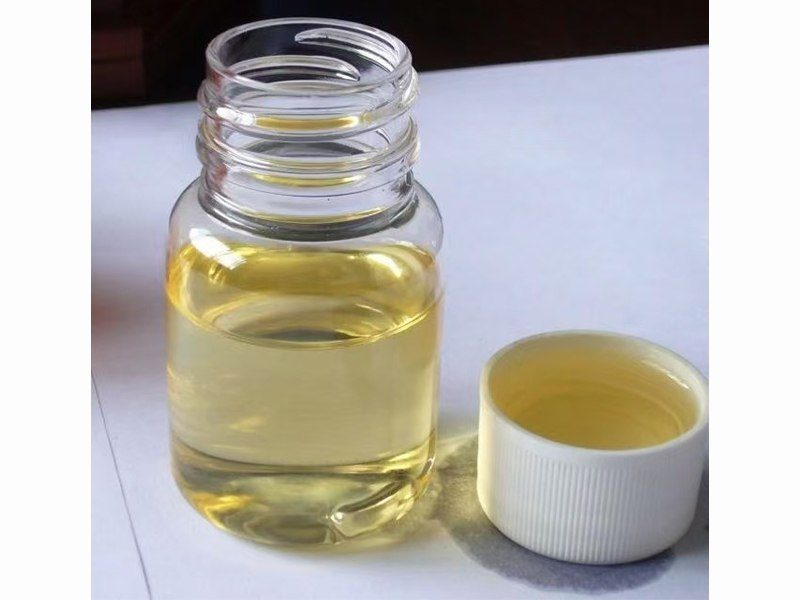
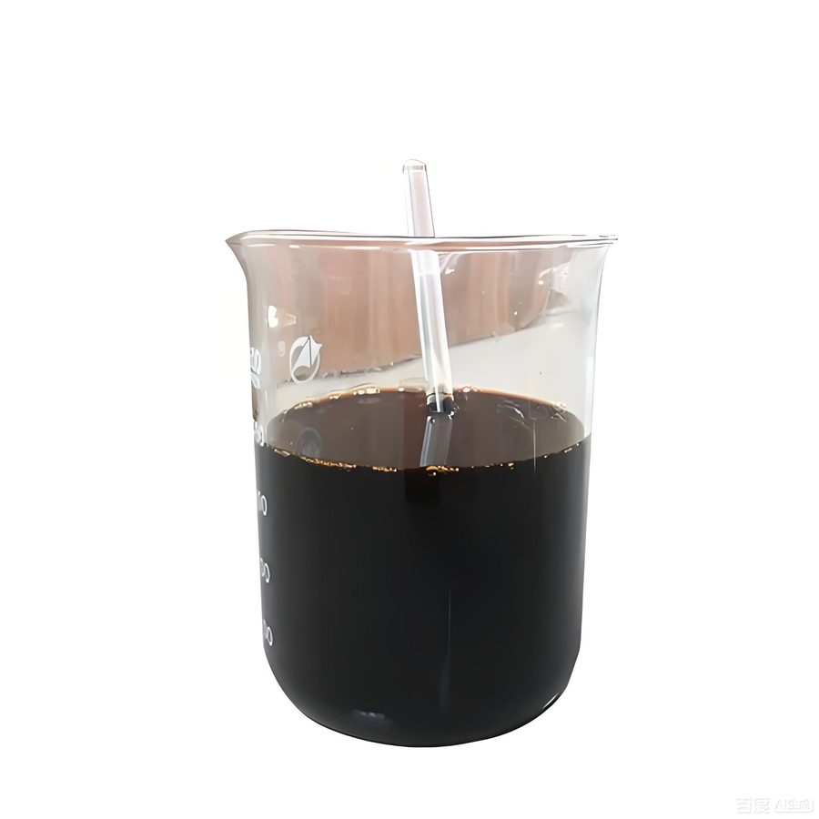
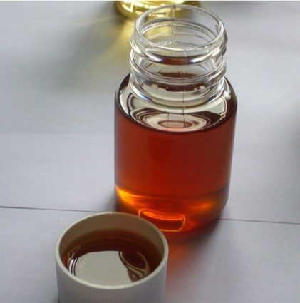
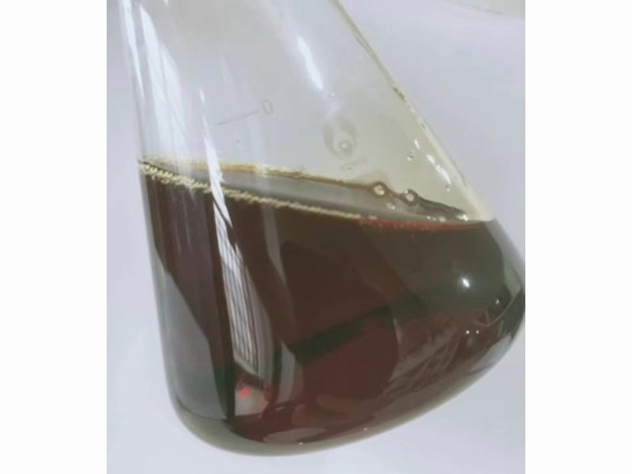
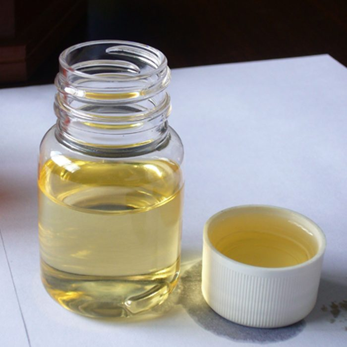
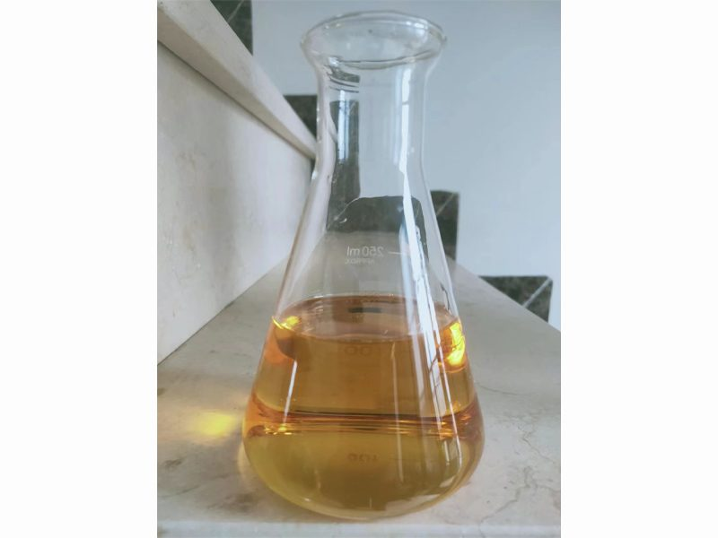
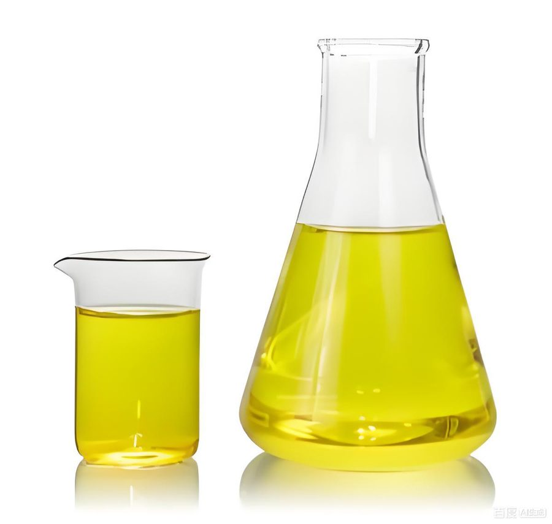

服务重油型燃气轮机发电行业，率先实现燃气轮机发电机组燃油防腐添加剂的国产化，产品替代进口并销往中东、南美、非洲等地。

抑制重油燃料中钒、钠等金属对透平叶片的高温腐蚀，替代进口产品，产品标准成为中国行业标准。

高效钝化燃料中的钒化合物，防止高温部件热腐蚀，保障机组长周期安全运行。

用于燃气轮机燃料油水洗脱盐工艺，快速破乳、高效脱盐脱水，降低燃料含钠量。

改善重油雾化与燃烧状况，降低烟尘排放，提高燃烧效率。
面向炼油装置提供破乳、防腐、防垢、水处理等系列助剂，助力装置安稳长满优运行。

用于原油电脱盐工艺，破乳速度快、脱水脱盐效率高、油水界面整齐。

在金属表面形成致密保护膜，有效缓解常减压塔顶等系统的低温腐蚀。

中性配方，高效抑制装置系统结垢，延长装置运行周期，对设备友好。

用于循环水及污水系统处理，缓蚀阻垢、杀菌灭藻，改善水质指标。
为油田开采与集输提供降粘、杀菌、缓蚀阻垢等系列助剂产品。
显著降低稠油粘度，改善原油流动性，提高开采与集输效率。
高效杀灭油田回注水系统中的细菌与藻类，防止微生物腐蚀与堵塞。

针对油田采出水与回注水处理，缓蚀阻垢，保障注水系统稳定运行。
我们的技术团队随时为您提供燃油添加剂与油田助剂的专业解决方案